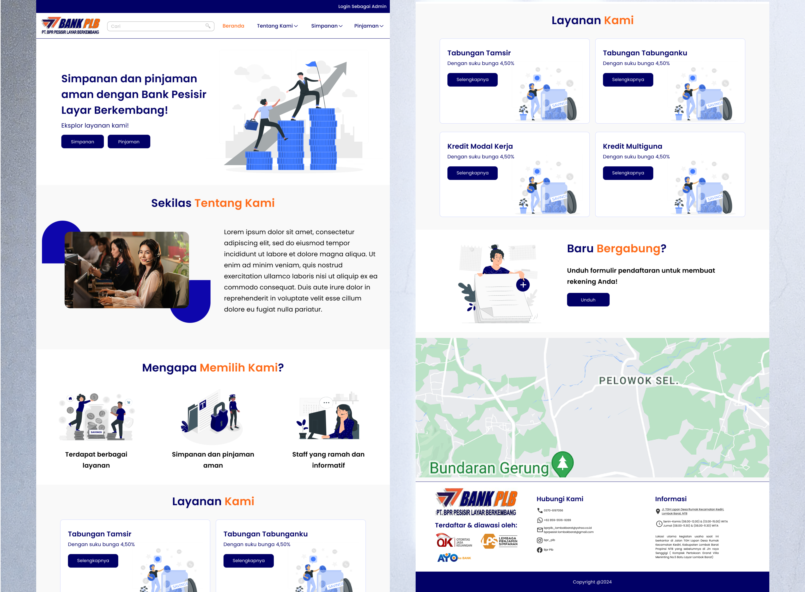
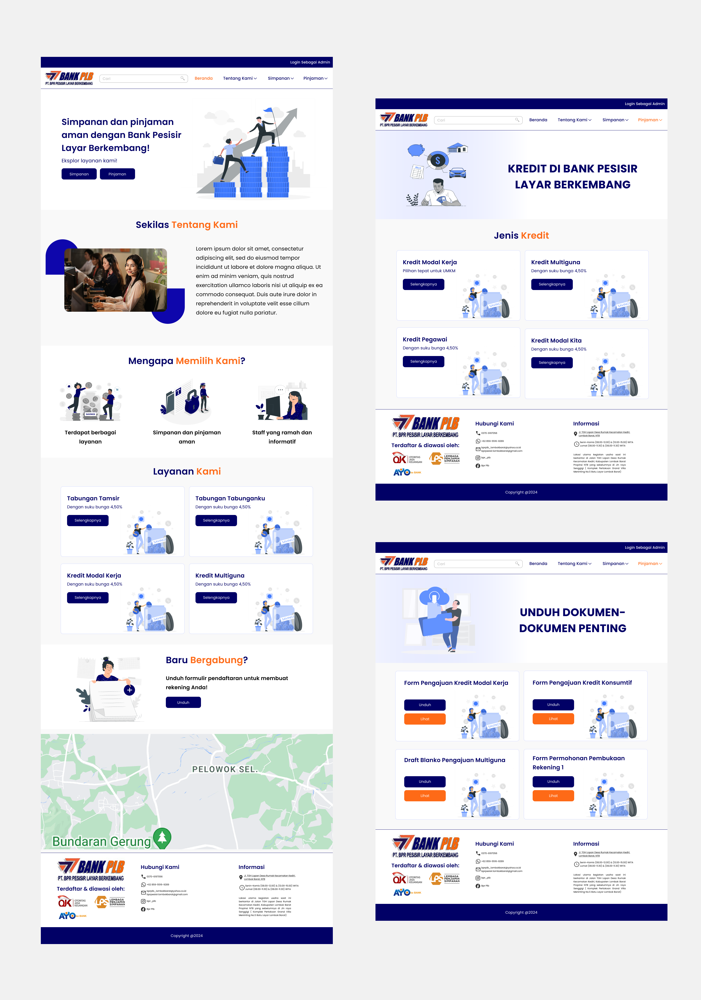

Bank Company Profile

Project Overview
Bank Pesisir Lombok (PLB) required a modern company profile website that could communicate its banking services, strengthen credibility, and provide easier access to information for prospective and existing customers.
The website was designed to showcase the bank’s products and services, introduce the company, and provide important information in a structured and accessible format. The goal was to improve the institution's digital presence while maintaining a professional and trustworthy image.
As the UI/UX Designer and WordPress Developer, I was responsible for planning the information architecture, designing the user interface, and implementing the website using WordPress to ensure responsiveness and ease of maintenance.
The Problem
Limited Access to Clear Banking Information
Customers often struggle to find relevant banking information due to fragmented content, unclear navigation, and outdated website structures.
PLB needed a centralized digital platform that could clearly communicate its savings products, loan services, company information, and customer support channels while maintaining a professional banking appearance.
Design Process
The design process focused on creating a professional and trustworthy banking website experience that enables visitors to easily access information and banking services.
Requirement Gathering
Collaborated with stakeholders to understand business goals, banking services, customer needs, and content requirements for the company profile website.
Information Architecture
Organized website content into clear categories including company information, savings products, loan services, important documents, and customer contact information.
Wireframing
Created wireframes to establish content hierarchy, navigation flow, service presentation, and call-to-action placements before moving into visual design.
UI Design
Developed a clean and professional visual system using the bank's brand colors, modern layouts, clear typography, and illustrations to build trust and credibility.
WordPress Development
Implemented the final designs in WordPress, ensuring responsiveness, maintainability, and accessibility across desktop and mobile devices.

My Contributions
- Conducted project planning and requirement analysis.
- Designed the website information architecture.
- Created responsive UI designs in Figma.
- Designed product and service presentation layouts.
- Developed the website using WordPress and Elementor.
- Optimized responsiveness across multiple screen sizes.
- Structured banking information for improved accessibility.
- Conducted User Testing using the System Usability Scale (SUS).